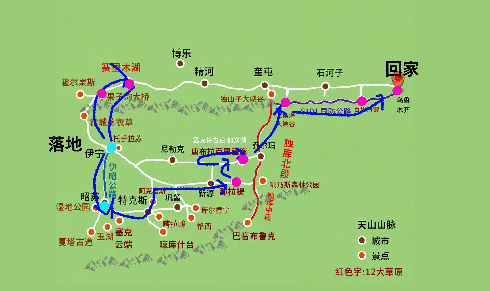

🅰️ 逆时针
🅱️ 顺时针 ⭐
逆时针 · 伊宁进→乌市出
机票 ¥5064/人（¥2899+¥2165）

1488
总公里
22h
总驾驶
360
最累km
2天
超300km
D1 · 7/9 周四
浦东07:15 ✈️ 伊宁13:30，休整
✈️ 落地
D2 · 7/10 周五
🏙️ 伊宁全天（喀赞其+六星街）
0km · 纯休息
D3 · 7/11 周六
伊宁 → 🌉果子沟 → 💎赛里木湖
160km / 2h
D4 · 7/12 周日
赛里木湖 → 🏔️伊昭公路 → 昭苏 → 76团🏠
360km / 5h ⚠️ 最累
D5 · 7/13 周一
🌻 76团第2天 🏠 婆婆的故乡
0km · 纯休息
D6 · 7/14 周二
76团 → 昭苏 → 新源 → 🌿那拉提
320km / 5h ⚠️
D7 · 7/15 周三
🌿 那拉提全天 → 晚上到唐布拉营地
100km / 1.5h
D8 · 7/16 周四
🏞️ 百里画廊 + 唐布拉 + 🍯蜂蜜小镇
~50km · 走走停停
D9 · 7/17 周五
唐布拉 → 乔尔玛 → 🛣️独库北段 → 🏜️安集海
250km / 4h
D10 · 7/18 周六
独山子 → 🔴S101百里丹霞 → 乌鲁木齐
248km / 3h
D11 · 7/19 周日
乌鲁木齐14:40 ✈️ 虹桥19:20
✈️ 回家
顺时针 · 乌市进→伊宁出 ⭐
机票 ¥5350/人（¥2560+¥2790）

1436
总公里
24.5h
总驾驶
373
最累km
1天
超300km
D1 · 7/4 周六
上海虹桥14:20 ✈️ 乌鲁木齐19:30，休整
✈️ 落地
D2 · 7/5 周日
乌市 → 🔴S101百里丹霞 → 🏜️安集海 → 奎屯
248km / 3h
D3 · 7/6 周一
奎屯 → 🛣️独库公路全程 → 🌿那拉提
270km / 5.5h
D4 · 7/7 周二
🌿 那拉提全天 → 晚上到唐布拉营地
102km / 1.8h
D5 · 7/8 周三
🏞️ 百里画廊 + 唐布拉 + 🍯蜂蜜（孟克特待定）
~50km · 走走停停
D6 · 7/9 周四
唐布拉 → 76团 🏠 婆婆的故乡
236km / 3.7h
D7 · 7/10 周五
🌻 76团全天 🏠
0km · 纯休息
D8 · 7/11 周六
76团 → 伊昭公路 → 伊宁 → 果子沟 → 💎赛里木湖营地
373km / 5h ⚠️ 最累
D9 · 7/12 周日
💎 赛里木湖全天（环湖+日出）→ 伊宁
157km / 2.4h
D10 · 7/13 周一
🏙️ 伊宁全天（喀赞其+六星街）
0km · 纯休息
D11 · 7/14 周二
伊宁16:40 ✈️ 浦东22:05
✈️ 回家
📊 方案对比
| 🅰️ 逆时针 | 🅱️ 顺时针 | |
|---|---|---|
| 方向 | 伊宁→乌市 | 乌市→伊宁 |
| 总里程 | 1488km | 1436km ✅ |
| 总时长 | 22h ✅ | 24.5h |
| 最累单日 | 360km | 373km |
| 超300km | 2天 | 1天 ✅ |
| 连续赶路 | D4+D6 ⚠️ | 无 ✅ |
| 后3天 | 250+248+✈️ | 157+0+✈️ ✅ |
| 独库公路 | 北段130km | 全程270km ✅ |
| 机票/人 | ¥5064 ✅ | ¥5350 |
📈 每日驾驶强度
🅰️ 逆时针
🅱️ 顺时针
虚线=200km
🐣 推荐
🅱️ 顺时针更适合带老人小孩！机票只多11元/人，换来：后程彻底轻松、独库全程体验、无连续赶路日。
❌ 为什么不选伊宁进出？
伊进伊出看似方便（同一机场），但问题很大：
• 独库公路走不了 — 独库在伊宁东北方向，伊进伊出要走独库必须原路往返600km+
• 大量回头路 — 伊宁→那拉提→独库→再回伊宁，等于跑两遍
• S101百里丹霞去不了 — 百里丹霞在乌鲁木齐和独山子之间，伊进伊出完全不经过
• 总里程反而更长 — 绕路导致1600km+，比环线多200km
• 唯一优势是同机场省心，但机票反而更贵（伊宁直飞往返约¥6000/人），体验还大打折扣